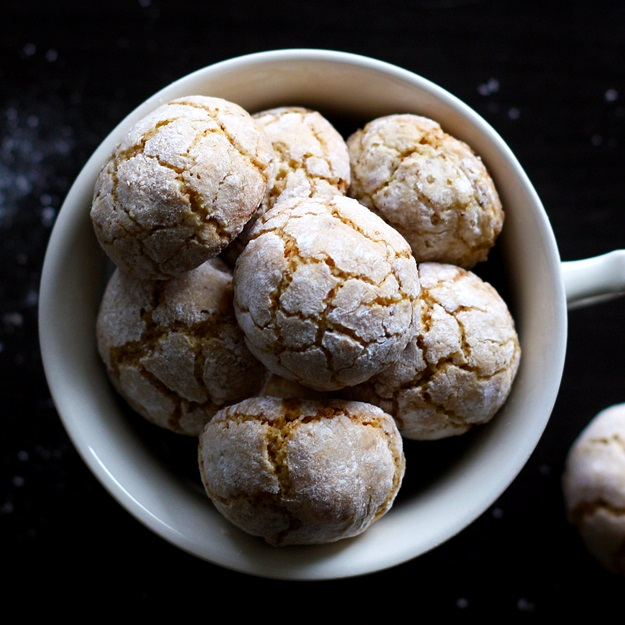

These delicious almond-flavored biscotti have an ancient history, as they were supposedly first made during the Middle Ages. Their name is derived from the Italian amaro, meaning bitter, in reference to the sharp flavor of bitter almonds or apricot kernels, which are traditionally used in the recipe, together with egg whites and sugar.
Meal prep time : 40 minutes
Servings : 32